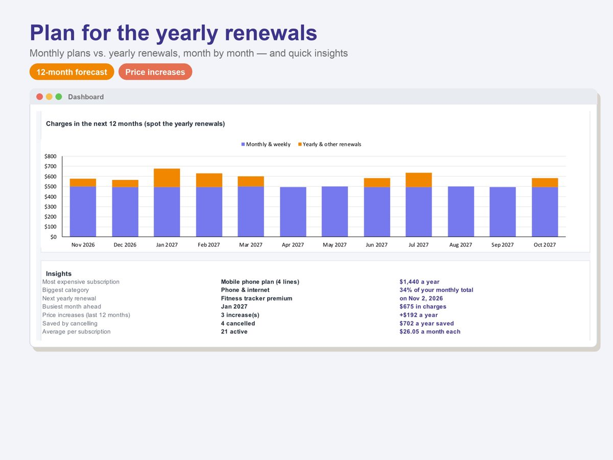
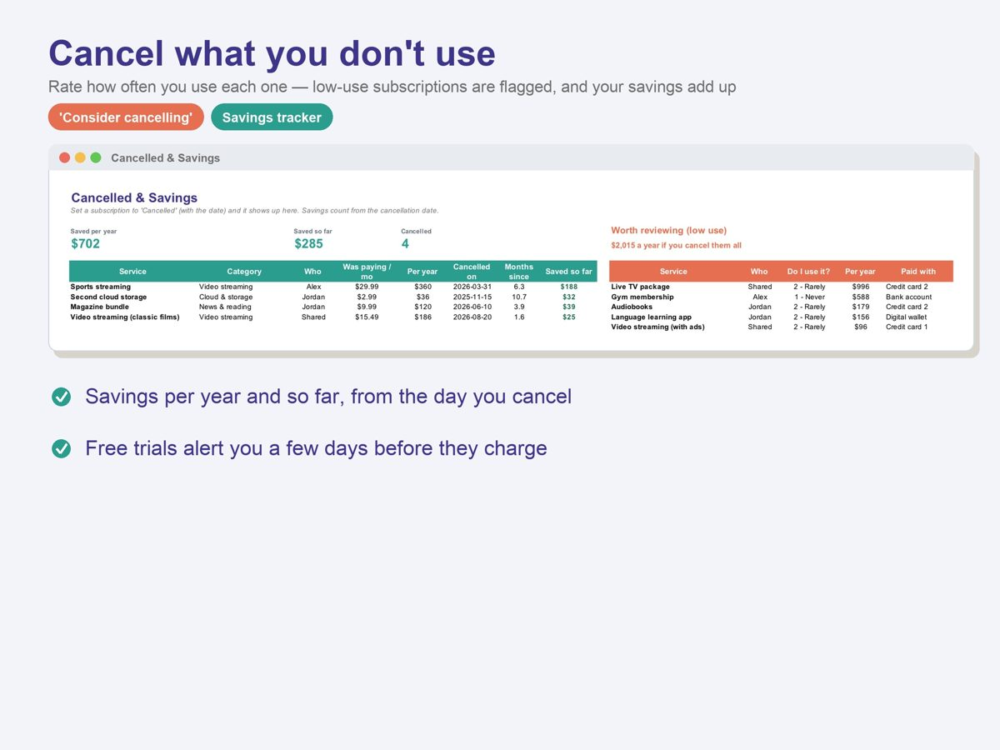

How to Audit Your Subscriptions in 30 Minutes (Yearly-Cost Example)
Subscriptions are easy to start and easy to forget. Each one looks small on its own, which is exactly why the total surprises people. A 30-minute audit once or twice a year fixes that: list everything, compare it on the same yearly basis, and decide one by one.
1. Find every recurring charge
Go through the last 12 months of bank and card statements, not just the last one. Yearly renewals only show up once a year, and they're the ones people forget most. Also check the subscription settings in your phone's app store and any payment app you use.
- Write down each charge: name, amount, how often it bills, the next charge date and the card it's on.
- Note who uses it. Shared family plans are often paid twice by accident.
- Add any free trial you've started, with the date it turns into a paid plan.
2. Convert everything to a yearly cost
A $4.99 weekly plan and a $139 yearly plan can't be compared as they appear on your statement. Multiply each one to a full year: weekly × 52, monthly × 12, quarterly × 4. Watch the weekly ones: four weeks is not a month. $4.99 a week is $21.62 a month on average, not $19.96.
| Subscription | Price | Billed | Per year | Per month (avg.) |
|---|---|---|---|---|
| Video streaming | $15.49 | Monthly | $185.88 | $15.49 |
| Second video streaming | $9.99 | Monthly | $119.88 | $9.99 |
| Music | $11.99 | Monthly | $143.88 | $11.99 |
| Cloud storage | $2.99 | Monthly | $35.88 | $2.99 |
| Gym | $39.00 | Monthly | $468.00 | $39.00 |
| Fitness app | $79.99 | Yearly | $79.99 | $6.67 |
| Photo editing app | $139.00 | Yearly | $139.00 | $11.58 |
| Language app | $4.99 | Weekly | $259.48 | $21.62 |
| Total | $1,431.99 | $119.33 |
Example numbers only. That total is about $3.92 a day, and the most expensive item on a yearly basis is not the one with the biggest price tag: it's the "small" weekly plan.

3. Rate how much you use each one
Next to each subscription, write how often you really used it in the last month: daily, weekly, monthly, rarely or never. Be honest; the statement already knows. Anything rated rarely or never goes on the shortlist.
4. Decide: keep, pause, downgrade or cancel
- Keep what you use weekly or more and would pay for again today.
- Pause or downgrade what you use only part of the year (many services let you pause, or switch to a cheaper tier).
- Cancel duplicates and anything you haven't opened in a month.
In the example, cancelling the second streaming service, the unused fitness app and the weekly language app saves $459.35 a year ($38.28 a month on average). The total drops from $1,431.99 to $972.64.

5. Put renewals and trials on a calendar
Most surprise charges come from two things: a yearly renewal you forgot, and a free trial that quietly turned into a paid plan. Put every yearly renewal date and every trial end date on a calendar, with a reminder a few days before. Then repeat the audit every six months, and whenever a price goes up.
Paid every two weeks? Our guide on budgeting a biweekly paycheck shows how to assign each bill, subscriptions included, to the paycheck that pays it.
Want the audit done for you? These templates convert every plan to a yearly cost and flag renewals, trials and low-use subscriptions:

2027 Money Planner
Monthly budget, paycheck plan, bills, debt payoff, savings goals and net worth — all fed by one simple transaction log.
See it on Gumroad →
Monthly Budget Planner (50/30/20)
A budget that fills itself in from your transactions — monthly, yearly and for every savings goal.
See it on Gumroad →
Subscription Tracker
See what your subscriptions really cost per month and per year, every renewal coming up, and the ones worth cancelling.
See it on Gumroad →General information only, not financial, tax or legal advice.